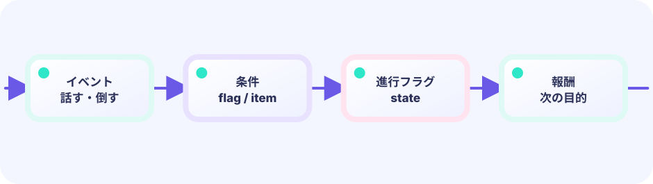

クエスト番号
0で村、1で同行など、進行を整数で表します。
quest int
★★★★★ / PLAYABLE
仲間・クエスト進行・フィールド・戦闘・セーブを1本にまとめます。大きなRPGも、小さなフラグとシーン変数の組み合わせです。
見た目はオリジナル主人公の 海老・天次郎。当たり判定は図形のままです。動きの計算は LEVEL 01 の Update / Draw と同じ枠の中に書きます。
はじめて読む人へ
仲間は一緒に戦う人物データ、クエストは目的と進み具合の組、セーブはその状態を後で読める形で残すこと。クエスト番号で今の目的を選びます。 PLAYABLEは『このページで実際に操作できる』という印です。
このページの1本
説明と次のコードを対応させてから、ゲームで変化を確かめよう。
quest := quests[questID]
PLAYABLE / WEBASSEMBLY
移動してイベントを進め、戦闘してセーブ。Rでデータ初期化。
DEEP DIVE / QUEST + SAVE
クエスト番号とセーブデータです。今どこまで進んだかを整数で持ち、ブラウザの localStorage に書き出せば、ページを閉じても続きから遊べます。
0で村、1で同行など、進行を整数で表します。
quest int
フィールドと戦闘を scene で切り替えます。
if scene == 1 { return battle() }
quest/x/y/hp を localStorage へ保存・読込します。
localStorage.setItem(saveKey+"quest", …)
TRY IT / LAB
進行は整数のクエスト番号。セーブして読めば続きから再開できます。
本物のゲームの公式を、手でゆっくり回す模型です。
TRY IT · GO
quest++ save.quest = quest quest = save.quest
—
THE SAVE RULE
save(quest, x, y, hp)
再開時
load() → 同じ世界
必要な最小データだけ保存します。全部の敵位置を覚えなくても、クエスト番号があれば物語は復元できます。
IN THE REAL GAME
起動時に load し、イベント後に save します。Rキーで削除して最初からにもできます。
func (g *game) save() {
s := js.Global().Get("localStorage")
s.Call("setItem", saveKey+"quest", strconv.Itoa(g.quest))
s.Call("setItem", saveKey+"x", strconv.Itoa(g.x))
s.Call("setItem", saveKey+"y", strconv.Itoa(g.y))
s.Call("setItem", saveKey+"hp", strconv.Itoa(g.hp))
}WITHOUT SAVE
短いゲームなら許せても、RPGでは続きが命です。
WITH QUEST FLAGS
番号やフラグで会話・出現・戦闘を切り替えられます。
YOUR FIRST TUNING
quest の分岐を増やすだけで、新しい村の出来事を追加できます。
FEEDBACK